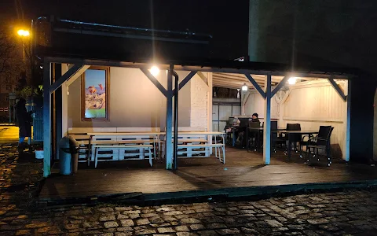

Co to jest kebab i jak go zrobić?
Kebab to jedno z najbardziej popularnych dań typu fast food, znane na całym świecie.
W swojej podstawowej formie składa się z mięsa, które może być grillowane, pieczone lub smażone, a następnie serwowane w pieczywie lub na talerzu.
Mięso kebabowe najczęściej to baranina, kurczak, wołowina, a w niektórych regionach również wieprzowina.
Do kebaba dodaje się również świeże warzywa takie jak pomidory, ogórki, cebula, a całość często polewana jest różnorodnymi sosami, jak jogurtowy, czosnkowy lub ostry.
W zależności od kraju i regionu, kebab może przybierać różne formy i warianty.
Historia powstania kebaba
Historia kebaba sięga tysięcy lat wstecz i ma swoje korzenie na Bliskim Wschodzie, zwłaszcza w Turcji,
Iranie i na obszarze dawnego Imperium Osmańskiego. Początkowo kebab był przygotowywany przez wojowników i nomadów, którzy piekli mięso na otwartym ogniu.
Współczesna wersja kebaba, jaką znamy dzisiaj – czyli mięso obracane na pionowym rożnie (doner kebab) – narodziła się w XIX wieku w Turcji,
a konkretnie w mieście Bursa. Kebab szybko zdobył popularność i rozprzestrzenił się po całej Europie oraz reszcie świata,
głównie za sprawą tureckich imigrantów, którzy wprowadzili to danie do zachodniej kultury.

Przepis na kebaba w domu:
Składniki:
- 500 g mięsa (baranina, kurczak lub wołowina)
- 1 cebula
- 2 ząbki czosnku
- 2 łyżki jogurtu naturalnego
- 1 łyżka oliwy z oliwek
- Przyprawy: sól, pieprz, papryka, kumin, kolendra
- Chleb pita lub tortilla
- Świeże warzywa: pomidor, ogórek, sałata, cebula
- Sosy: czosnkowy, ostry lub jogurtowy
Przepis:
- Pokrój mięso na cienkie paski.
- W misce wymieszaj jogurt, oliwę z oliwek oraz przeciśnięty czosnek i przyprawy.
- Dodaj mięso do marynaty i odstaw na co najmniej godzinę (najlepiej na całą noc).
- Podsmaż mięso na patelni, aż będzie złociste i dobrze przypieczone.
- Podgrzej chleb pita lub tortillę na suchej patelni lub w piekarniku.
- Na środku pieczywa ułóż mięso, dodaj świeże warzywa (pomidor, ogórek, sałata, cebula).
- Dodaj ulubiony sos (czosnkowy, ostry lub jogurtowy).
- Zawiń kebaba lub złóż w pół i podawaj na gorąco.
Gdzie można zjeść kebaba w Gliwicach?
Stodoła
Kapadokya

Kapadokya to lokal serwujący kebab, często inspirowany kuchnią turecką.
Nazwa nawiązuje do Kapadocji, regionu w Turcji słynącego z unikalnych krajobrazów i bogatej tradycji.
W menu można znaleźć klasyczne potrawy kuchni bliskowschodniej, takie jak kebab,
falafel, pita oraz dania z mięsem grillowanym na tradycyjny sposób.
Lokale o tej nazwie zazwyczaj oferują zarówno opcje na wynos, jak i jedzenie na miejscu, w swobodnej atmosferze.
Adres: Wrocławska 4A
W Gliwicach jest wiele restauracji oferujących coś innego
jeśli chcesz się dowiedziec więcej kliknij w link: